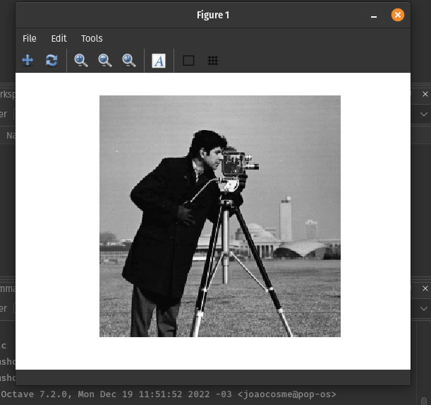
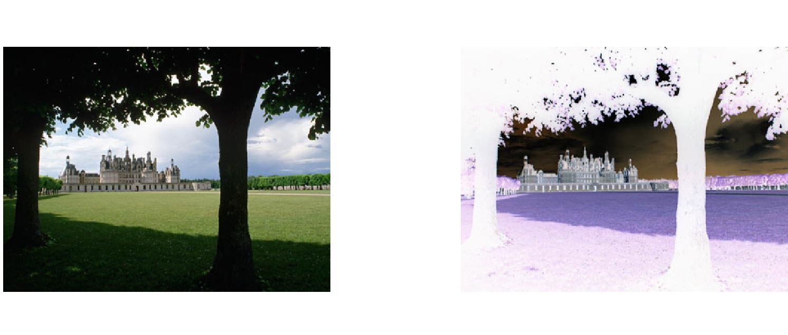
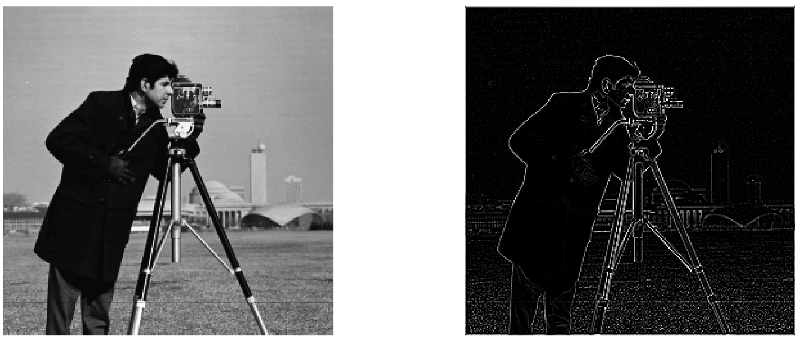
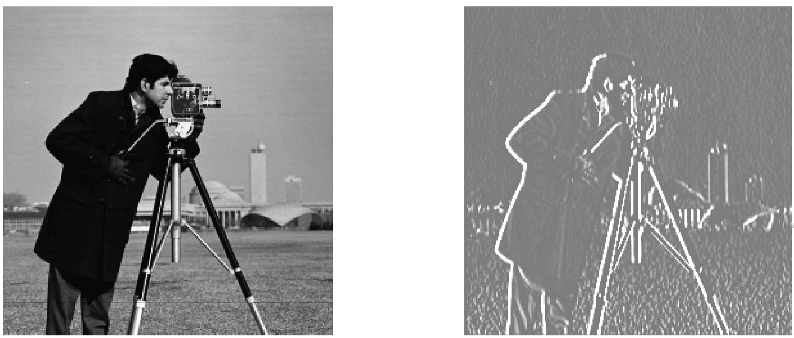

Nome: João Pedro Cosme da Silva / Cartão 0031472
imshow e imreadConforme visto em aula, mostra a imagem carregada:

O MatLab / Octane, permite a aplicação de uma mesma operação sobre todos os pontos de uma imagem, dessa forma, o trecho abaixo exibe todo o processo necessário para o cálculo de negativo e apresentação do resultado:
>> figure;
>> subplot(1,2,1);
>> imshow(i);
>> subplot(1,2,2);
>> imshow(255-i);
Segue o resultado da operação de negativo sobre a nova imagem carregada:

Usando o comando conv2 do matlab, podemos facilmente aplicar um filtro de convolução sobre uma imagem qualquer.
Conhecido como um filtro passa-baixa, podemos verificar a aplicação deste filtro causa um blur sobre nossa imagem.
image = imread(file_name);
G = [0.0625 0.125 0.0625; 0.125 0.25 0.125; 0.0625 0.125 0.0625];
i_fg = image;
for i=1:3
i_fg = conv2(i_fg,G);
end
figure;
subplot(2,1,1);
imshow(image);
subplot(2,1,2);
imshow(uint8(i_fg));
Acima, podemos ver o trecho de código para a aplicação desta convolução utilizando o MatLab. Como executamos uma operação de ponto flutuante (visto que os valores do filtro são deste tipo), ao final, temos que reconverter a imagem para unassigned int 8 para que possamos apresentar a imagem.
Aplicando o filtro três vezes seguidas, obtemos um resultado ainda mais borrado. Além disso, devido a aplicação sucessiva de convoluções, que não são aplicadas nas bordas devido ao "encaixe" do filtro sobre essas areas, vemos uma borda surgindo.
Conhecido como filtro passa-alto, este filtro nos mostra as arestas apresentadas na imagem.
Para este item e itens posteriores, a seguinte função read_and_conv foi desenvolvida e utilizada:
function conv_image = read_and_conv(image_name, kernel)
image = imread(image_name);
[row,columns,num_channels] = size(image);
if (num_channels == 1)
conv_image = conv2(double(image), double(kernel));
else
conv_image = convn(double(image), double(kernel));
end
figure;
subplot(2,1,1);
imshow(image);
subplot(2,1,2);
imshow(uint8(conv_image));
conv_image = uint8(conv_image);
Aplicando o filtro $Lp$, temos o seguinte resultado:
Já adicionando o filtro $Ln$, temos o seguinte resultado:

Utilizando este filtro, junto da soma de 127 ao final do processamento, temos um efeito de superposição das arestas sobre a imagem base. Dessa forma, se assemelha a desenhos, onde as arestas são feitas em traçados bem definidos.
Utilizando este filtro, criamos um efeito de contraste acentuado na extremidade esquerda dos artefatos, gerando um efeito de "relevo".
Somando 127, temos um efeito de

Já invertendo os sinais de $Ph$, temos um efeito de contrastes na extremidade contrária da imagem.
Já somando 127, temos o seguinte efeito
Este filtro gera um efeito visual de relevo nas imagens, só que dessa vez um relevo relacionado as linhas horizontais da imagem.
Invertendo, obtemos:
Realizando a computação utilizando o seguinte código
function grad = mag_grad(image_name)
Ph = [-1 0 1; -1 0 1; -1 0 1];
Pv = [-1 -1 -1; 0 0 0; 1 1 1];
image = imread(image_name);
[row, columns, num_channels] = size(image);
if (num_channels == 1)
ph_image = conv2(double(image), double(Ph));
pv_image = conv2(double(image), double(Pv));
else
ph_image = convn(double(image), double(Ph));
pv_image = convn(double(image), double(Pv));
end
grad1 = ph_image;
for x = 1:(row*columns)
grad1(x) = sqrt((ph_image(x)*ph_image(x))+(pv_image(x)*pv_image(x)));
end
figure;
subplot(1, 2, 1);
imshow(image);
subplot(1, 2, 2);
imshow(uint8(grad1));
Obtendo o seguinte resultado:
Com a o código abaixo, alterado para computar o gradiente em uma linha, segue abaixo:
function grad = mag_grad_one(image_name)
Ph = [-1 0 1; -1 0 1; -1 0 1];
Pv = [-1 -1 -1; 0 0 0; 1 1 1];
image = imread(image_name);
[row, columns, num_channels] = size(image);
if (num_channels == 1)
ph_image = conv2(double(image), double(Ph));
pv_image = conv2(double(image), double(Pv));
else
ph_image = convn(double(image), double(Ph));
pv_image = convn(double(image), double(Pv));
end
grad1 = ph_image;
grad1 = sqrt(ph_image.*ph_image + pv_image.*pv_image);
figure;
subplot(1, 2, 1);
imshow(image);
subplot(1, 2, 2);
imshow(uint8(grad1));
Podemos ver que obtemos o mesmo resultado que apresentado no item anterior: